2 Tipos de estructuras que surgen en datos desagregados
En las series de tiempo (datos secuenciales) una de las características principales es su natural estructura compleja de autocorrelación que implica que las observaciones no son independientes. En general, presentan patrones de tendencia, ciclicidad o autocorrelación que requieren un entendimiento profundo para poder analizar correctamente la serie, ya sea para realizar descripción e inferencia acerca de su estructura o para generar predicciones acerca de valores futuros.
Los modelos de espacio de estados (bayesianos dinámicos) nos permite modelar la estructura de una serie de tiempo de forma modular, además:
- Mayor flexibilidad en cuanto a las estructuras que podemos usar, y cómo usar información acerca de la dinámica de la serie de tiempo (incluyendo aspectos de modelos ARIMA).
- Una forma estándar de tratar con valores faltantes, series irregulares, o varias observaciones contemporáneas.
- Una forma estándar de producir pronósticos puntuales, en intervalos, o por distribuciones.
- Una forma estándar de permitir que el modelo se adapte en el tiempo a cambios estructurales (por ejemplo, cambios de patrones de estacionalidad, efectos diferentes de covariables, etc.)
Por otro lado, regularmente las series de tiempo pueden estar desagregadas por diversos atributos específicos de interés para el investigador. Tales atributos podrían desagregarse a su vez en categorías o subcategorías más detalladas, esto es, categorías anidadas en categorías de grupos de mayor tamaño, por lo que a esta estructura de agregación jerárquica en las series de tiempo le llamamos naturalmente “Series de Tiempo Jerárquicas”, que usualmente resultan a causa de las divisiones geográficas.
Una estructura de agregación más compleja aún surge cuando podemos utilizar dos categorías jerárquicas juntas, e.g. jerarquías por producto y por región geográfica. En este caso se le conoce como “Series de Tiempo Agrupadas”
Para complementar e ilustrar nuestra investigación sobre Predicción en Modelos de Series de Tiempo Jerárquicas, se decidió utilizar siguiente dataset de Kaggle Tabular Playground Series Sep2022 El objetivo consiste en predecir un año completo de ventas para 4 artículos de 2 tiendas en 6 distintos países, por lo que, de acuerdo a lo comentado anteriormente, es una serie de tiempo con estructura jerárquica. (ver sección 1 para ampliar información sobre el dataset). El siguiente diagrama nos permite visualizar tal estructura:

Usualmente generamos predicciones desagregadas a partir de series de tiempo desagregadas y requerimos que tales predicciones se adicionen en la misma forma que la estructura en los datos. En nuestro ejemplo, las predicciones de cada tienda se adicionan para generar la predicción de cada país y éstas a su vez para generar la predicción de ventas total.
Nuestro objetivo es presentar y discutir los métodos de predicción para colecciones de series de tiempo jerárquicas bajo el reto que tales predicciones guarden congruencia a través de la estructura de agregación.
2.1 Series de Tiempo Jerárquicas
Esencialmente, estas series se organizan en una estructura por niveles, siendo el nivel 0 la jerarquía más alta, es decir, el nivel de mayor agregación de los datos.
La siguiente figura nos permitira conceptualizar de forma intuitiva las estructuras jerárquicas y servirá como base para construir las ecuaciones y notación necesaria.
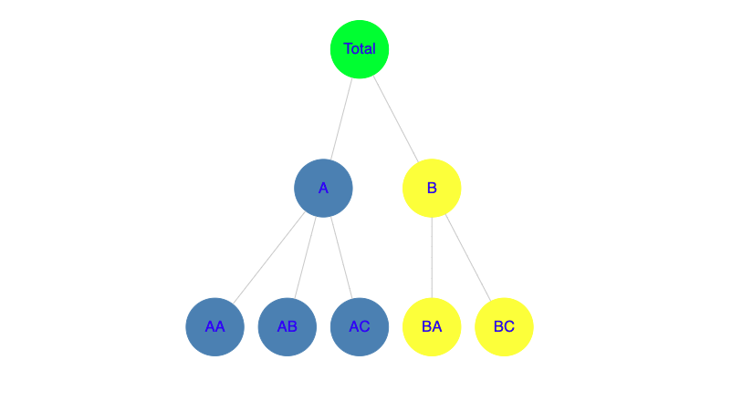 Figura A: diagrama para series de tiempo jerárquicas
Denotemos la \(t\)th observación por \(y_{t}\) donde \(t=1,...,T\). En el gráfico anterior podemos osbervar que la estructura jerárquica nos muestra que el Total está desagregado en 2 series \(A\) y \(B\) en el nivel 1, que a su vez se desagregan en 3 y 2 series respectivamente en el nivel más bajo. Esto implica que tenemos 8 (1, 2, 5) series, con 5 en el último nivel de la jerarquía.
Para cualquier tiempo \(t\), las observaciones en el último nivel inferior de la jerarquía deben sumar con las observaciones de las series superiores. Por tanto, podemos construir ecuaciones de agregación restricta (por llamarles de alguna forma):
\[ \begin{align} \tag{2.1.1} y_{t}=y_{\text{AA},t}+y_{\text{AB},t}+y_{\text{AC},t}+y_{\text{BA},t}+y_{\text{BB},t} \end{align} \]
equivalente a:
\[ \begin{align} \tag{2.1.2} y_{t}=y_{\text{A},t}+y_{\text{B},t} \end{align} \]
con
\[ \begin{align} \tag{2.1.3} y_{\text{A},t}=y_{\text{AA},t}+y_{\text{AB},t}+y_{\text{AC},t} \quad \text{y} \quad y_{\text{B},t}=+y_{\text{BA},t}+y_{\text{BB},t} \end{align} \]
Por practicidad, es recomendable que utilicemos una notación matricial (por ser más compacta). Básicamente, buscamos una matriz que induzca la forma en que las series inferiores deben agregarse. Para ello, contruimos una matriz de acumulación \(S\) de orden \(n \times m\) de la siguiente forma (con base a la estructura de nuestro ejemplo):
\[ \begin{bmatrix} y_{t} \\ y_{\text{A},t} \\ y_{\text{B},t} \\ y_{\text{AA},t} \\ y_{\text{AB},t} \\ y_{\text{AC},t} \\ y_{\text{BA},t} \\ y_{\text{BB},t} \end{bmatrix} = \begin{bmatrix} 1 & 1 & 1 & 1 & 1 \\ 1 & 1 & 1 & 0 & 0 \\ 0 & 0 & 0 & 1 & 1 \\ 1 & 0 & 0 & 0 & 0 \\ 0 & 1 & 0 & 0 & 0 \\ 0 & 0 & 1 & 0 & 0 \\ 0 & 0 & 0 & 1 & 0 \\ 0 & 0 & 0 & 0 & 1 \end{bmatrix} \begin{bmatrix} y_{\text{AA},t} \\ y_{\text{AB},t} \\ y_{\text{AC},t} \\ y_{\text{BA},t} \\ y_{\text{BB},t} \end{bmatrix} \]
cuya ecuación queda definida por:
\[ \begin{align} \tag{2.1.4} \boldsymbol{y}_t=\boldsymbol{S}\boldsymbol{b}_{t}, \end{align} \]
donde:
- \(\boldsymbol{y}_t\): vector \(n\)-dimensional con todas las observaciones de la jerarquía en el tiempo \(t\).
- \(\boldsymbol{S}\): matriz de acumulación.
- \(\boldsymbol{b}_t\): es un vector \(m\)-dimensional de las observaciones en el nivel último inferior de la jerarquía.
¿Qué representa nuestra matriz, cómo induce las relaciones de jerarquía, cómo se construye?.
- La primer fila de la matriz representa la ecuación (2.1.1), la serie en el nivel más alto de la jerarquía.
- En este caso, la segunda y tercer fila representan (2.1.3) correspondientes a las series \(A\) y \(B\) para el nivel 2 de nuestro ejemplo.
- \(\vdots\) (similar al nivel 2, se construyen niveles adicionales inferiores hasta llegar al penúltimo nivel).
- El último nivel deberá ser presentado por una matriz identidad \(I_m\).
Ejemplo. Kaggle Tabular Playground Series - Sep 2022
Como mencionamos en la sección 1, los datos corresponden a 6 países que a su vez poseen 2 tiendas (que compiten) y las cuales comercializan 4 productos de interés para los accionistas. El área de desarrollo comercial y presupuesto está interesada en conocer el valor de las ventas totales para 2021 en la región Europea; así mismo, desean conocer los ventas por producto, por tienda y por país para determinar el nivel de producción requerido por país garantizando que no exista desabasto ni sobreinventario (esto se analizará en series de tiempo agrupadas); finalmente, es requerido analizar la rentabilidad que se espera por tienda.
Como bien sabemos, la paquetería fpp3 adapta los principios tidy al procesamiento de datos. Por lo que, lo primero que haremos es transfomar nuestro dataset a un tabla de datos para serie de tiempo denominada tsibble (time series tibble).
sales_m <- sales |>
mutate(t = (year(date)-year(min(date)))*12 + (month(date)-month(min(date)))) |>
mutate(date = yearmonth(date)) |>
group_by(date,t,country,store,product) |>
summarise(num_sold = sum(num_sold,na.rm = TRUE)) |>
ungroup() |>
as_tsibble(index = date,key = c(country,store,product))`summarise()` has grouped output by 'date', 't', 'country', 'store'. You can
override using the `.groups` argument.head(sales_m,2) |> kable()| date | t | country | store | product | num_sold |
|---|---|---|---|---|---|
| 2017 Jan | 0 | Belgium | KaggleMart | Kaggle Advanced Techniques | 13345 |
| 2017 Feb | 1 | Belgium | KaggleMart | Kaggle Advanced Techniques | 12556 |
La función aggregate_key() se utiliza para crear series de tiempo jerárquicas; para especificar si corresponde a una estructura anidada utilizamos la notación parent/child. Esto genera filas adicionales a nuestro tsibble que corresponden a las observaciones de agregación generados para cada periodo.
Análisis de la tendencia
Analizaremos las tendencias de las ventas totales para todo Europa y desagregadas por país, luego por tienda y finalente por producto.
sales_m |>
aggregate_key(country/store/product, num_sold = sum(num_sold,na.rm=TRUE)/1000) |>
filter(is_aggregated(store)) |>
autoplot(num_sold) +
labs(x = "Mes/Año" , y = "Ventas (miles)",title = "Ventas totales: Europa y por país") +
facet_wrap(vars(country), scales = "free_y", ncol = 3) +
theme(legend.position = "none")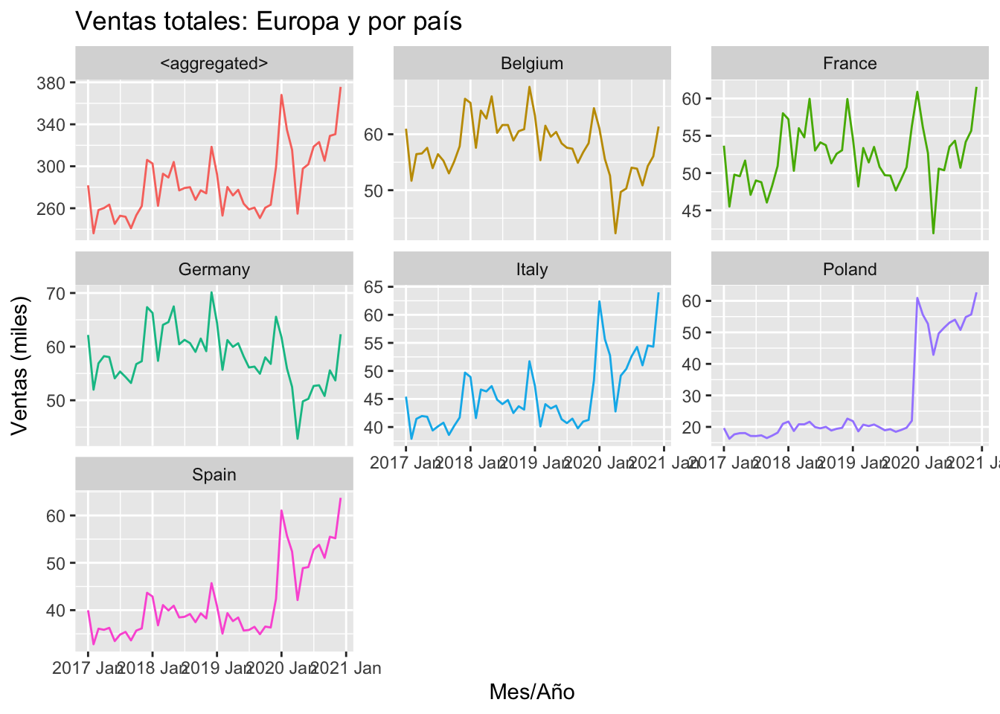
Observamos un patrón cíclico de pico muy cercano al final del año que en particular en 2019 en algunos países se observó justo en el final del año (excepto en Belgium y Germany). Coincidentemente con la pandemia, se tuvo una caída abrupta en las ventas para todos los países durante el primer trimestre de 2020 y una tendencia de recuperación en el nivel de ventas posterior a este trimestre.
En terminos generales, se observa una tendencia decreciente durante el año con un repentino incremento hacia el final del mismo, por lo que será relevante observar el comportamiento de la estacionalidad.
A gran escala, todos los países tuvieron un incremento considerable en las ventas en comparación con 2017, no obstante todos muestran una tendencia decreciente durante 2018 y 2019.
Otro elemento adicional, es que podemos observar dos patrones muy bien definidos del comportamiento de las ventas que surgen en lo que podríamos considerar 2 regiones: 1. Región norte de Europa: France, Belgium y Germany. Una caída severa de sus niveles de ventas durante el primer trimestre de 2020 (niveles cercanos 0) con una recuperación durante los siguientes trimestres casi a niveles previos a la caída del primer trimestre. 2. Región sur de Europa: Poland, Italy y Spain. Un cambio abrupto en el nivel de ventas a partir de 2020, en particular Poland con un incremento del 250% y un incremento de aproximadamente un 40% para Italy y Spain. El impacto por la caída en en el primer trimestre fue moderado para los tres países.
A nivel Nacional, observamos que el patrón de tendencia se rige en su mayoría por el comportamiento de la región sur, en particular en el fuete incremento que se experimentó en 2020.
sales_m |>
aggregate_key(store/country/product, num_sold = sum(num_sold,na.rm=TRUE)/1000) |>
filter(is_aggregated(country)) |>
autoplot(num_sold) +
labs(x = "Mes/Año" , y = "Ventas (miles)",title = "Ventas totales: Europa y por tienda") +
facet_wrap(vars(store), scales = "free_y", ncol = 3) +
theme(legend.position = "none")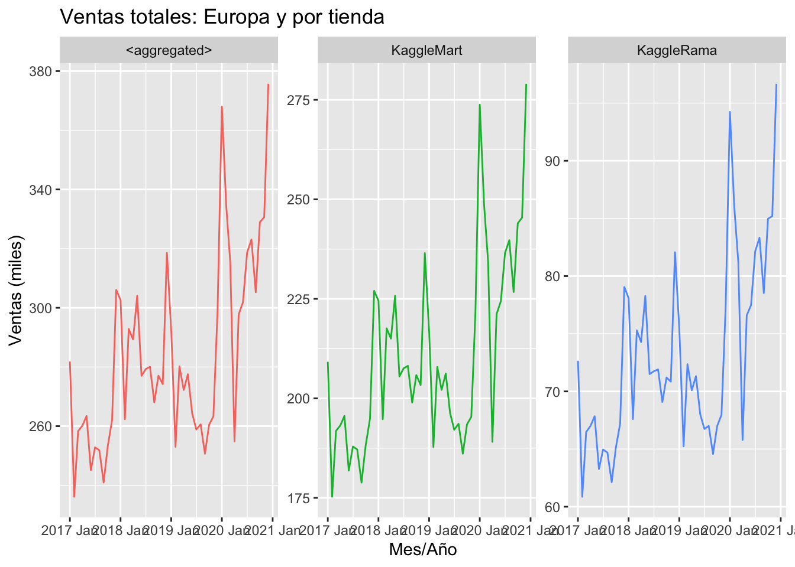
El comporatmiento entre ambas tiendas es prácticamente el mismo pero a escalas diferentes, por lo que el agregado de Europa guarda este mismo patrón.
Como era de esperarse, en comparación con lo observado por país, observamos los mismos elementos en las tres series: 1. Incremento significativo en el nivel de ventas para 2018 y 2019 en comparación con 2017; 2. Tendencia decreciente de 2018 a 2019; 3. Máximo histórico observado a finales de 2019 con una abrupta caída en el primer trimestre de 2020 y una tendencia de recuperación durante los siguientes trimestres para superar nuevamente el nivel de ventas histórico para el cierre del año 2020.
sales_m |>
aggregate_key(product/store/country, num_sold = sum(num_sold,na.rm=TRUE)/1000) |>
filter(is_aggregated(store)) |>
autoplot(num_sold) +
labs(x = "Mes/Año" , y = "Ventas (miles)",title = "Ventas totales: Europa y por producto") +
facet_wrap(vars(product), scales = "free_y", ncol = 3) +
theme(legend.position = "none")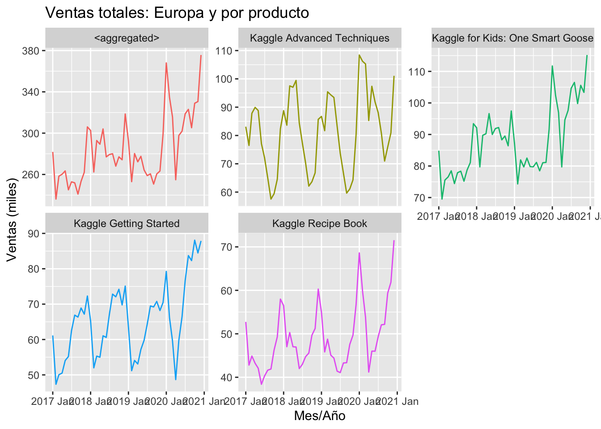
Finalmente, cuando observamos la tendencia por producto observmos que en general tienen un comportamiento creciente y fuertemente estacional, excepto One Smart Goose que muestra un patron fluctuante (no estacionalidad visible), una tendencia creciente con una caída fuerte en 2019 y una recuperación en 2020.
Análisis de estacionalidad
Anteriormente, ya observamo ciertos comportamientos estacionales en el análisis de tendencia, en particular nos interes la estacionalidad por producto y por país.
En el caso por producto, esperaríamos cierto comportamiento bien definido en la mayoría de los productos. En el análisis por país, de acuerdo a lo observado en la tendencia, consideramos que es factible obtener ciertos comportamientos bien definidos por la región norte y la región sur.
sales_m |>
aggregate_key(country/store/product, num_sold = sum(num_sold,na.rm=TRUE)/1000) |>
filter(is_aggregated(store)) |>
select(-store) |>
mutate(country = factor(country)) |>
gg_season(num_sold) +
facet_wrap(vars(country), nrow = 4, scales = "free_y") +
labs(x = "Mes",y = "Ventas (miles)")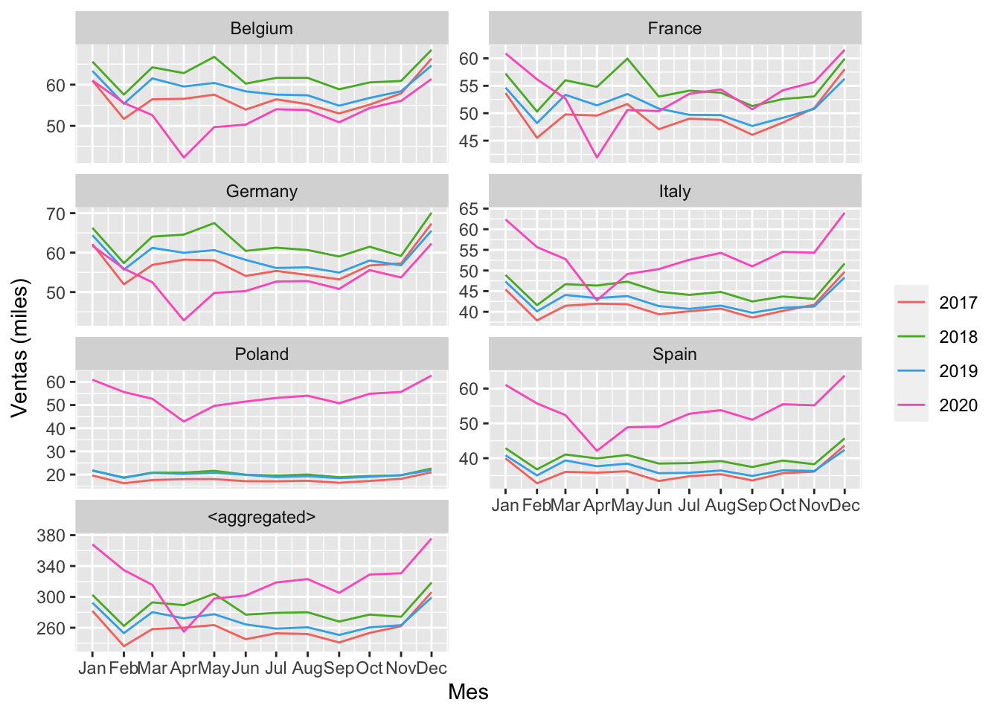
De forma consistente con el análisis de tendencia, los patrones de comportamiento estacional se encuentran bien definidos por las regiones mencionadas anteriormente, así como un dominio de la región norte con el agregado de todo Europa.
Aspectos que resaltan claramente con respecto al año 2020 y debemos tener presente son:
- El comportamiento de la región norte en ausencia del 2020, tiene sus niveles de venta más altos tanto en los días alrededor del principio y fin de año así como durante el segundo trimestre (abril-junio). Visualmente podríamos establecer que sus valores promedio mensuales estarían en el rango entre 50 y 60.
- Para la región sur (Italy, Poland, Spain), también en asuencia de 2020 el patrón de comportamiento estacional es muy similar a la región norte pero con la diferencia de ser más bajo, con valores medios mernsuales entre 20 y 40.
- Finalmente, el 2020 muestra un cambio fuerte en los niveles de venta de la región sur, casi similar al observado en la región norte.
sales_m |>
aggregate_key(product/store/country, num_sold = sum(num_sold,na.rm=TRUE)/1000) |>
filter(is_aggregated(store)) |>
select(-store) |>
mutate(product = factor(product)) |>
gg_season(num_sold) +
facet_wrap(vars(product), nrow = 3, scales = "free_y")+
labs(x = "Mes",y = "Ventas (miles)")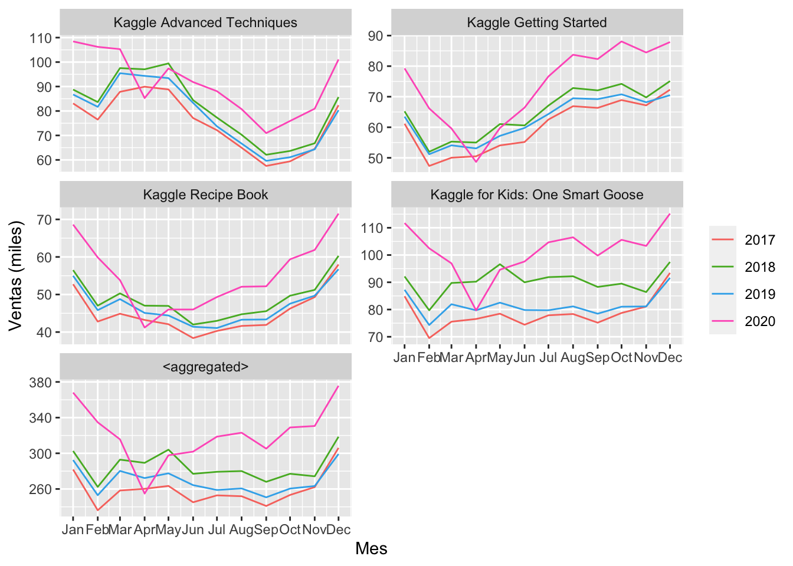
El gráfico anterior muestra un comportamiento estacional perfectamente bien definido por cada producto, incluso 2020 en general mantiene este comportamiento pero incrementado en sus niveles de venta y con el claro impacto de caída durante el primer trimestre del 2020 y tendencia creciente durante los trimestres subsecuentes.
Es necesario indicar que no se tiene información suficiente para poder determinar a qué obedece este crecimiento en los niveles de venta durante 2020; observamos que el crecimiento en las ventas puede obedecer a mayor ventas en los productos, pero esto también puede estar determinado por un crecimiento en tiendas en los países de las región sur que es donde se observó el creimiento.
2.2 Series de Tiempo Agrupadas
En este caso, los datos no tienen una forma jerárquica de desagregarse naturalmente. La siguiente figura es un ejemplo simple para una estructura agrupada.
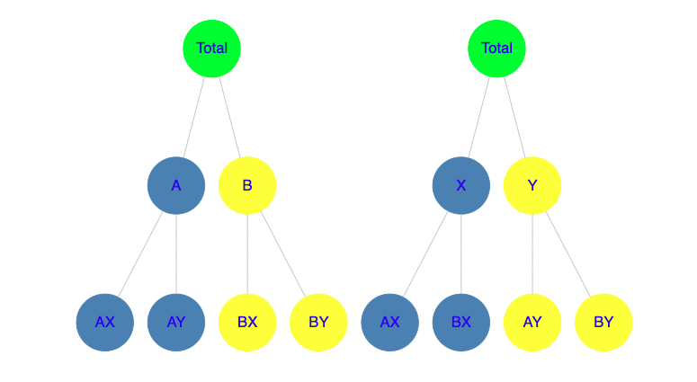 Figura B: diagrama para series de tiempo agrupadas
Observemos que en estas estructuras existen formas alternativas de agregación. En el ejemplo anterior, la agregación de \(X\) y \(Y\) es alternativa con \(A\) y \(B\).
Continuando con el ejemplo del gráfico, tenemos entonces que para cualquier tiempo \(t\):
\[ \begin{align} \tag{2.2.1} y_{t}=y_{\text{AX},t}+y_{\text{AY},t}+y_{\text{BX},t}+y_{\text{BY},t} \end{align} \]
Para el primer nivel de la estructura agrupada:
\[ \begin{align} \tag{2.2.2} y_{\text{A},t}=y_{\text{AX},t}+y_{\text{AY},t} \quad \quad y_{\text{B},t}=y_{\text{BX},t}+y_{\text{BY},t} \end{align} \]
No obstante, obervemos que alternativamente también se tiene:
\[ \begin{align} \tag{2.2.3} y_{\text{X},t}=y_{\text{AX},t}+y_{\text{BX},t} \quad \quad y_{\text{Y},t}=y_{\text{AY},t}+y_{\text{BY},t} \end{align} \]
De forma análoga a la construcción de notación matricial en el caso jerárquico, construimos una matriz de acumulación \(S\) de orden \(n \times m\):
\[ \begin{bmatrix} y_{t} \\ y_{\text{A},t} \\ y_{\text{B},t} \\ y_{\text{X},t} \\ y_{\text{Y},t} \\ y_{\text{AX},t} \\ y_{\text{AY},t} \\ y_{\text{BX},t} \\ y_{\text{BY},t} \end{bmatrix} = \begin{bmatrix} 1 & 1 & 1 & 1 \\ 1 & 1 & 0 & 0 \\ 0 & 0 & 1 & 1 \\ 1 & 0 & 1 & 0 \\ 0 & 1 & 0 & 1 \\ 1 & 0 & 0 & 0 \\ 0 & 1 & 0 & 0 \\ 0 & 0 & 1 & 0 \\ 0 & 0 & 0 & 1 \end{bmatrix} \begin{bmatrix} y_{\text{AX},t} \\ y_{\text{AY},t} \\ y_{\text{BX},t} \\ y_{\text{BY},t} \end{bmatrix} \] cuya ecuación queda definida por:
\[ \begin{align} \tag{2.2.4} \boldsymbol{y}_t=\boldsymbol{S}\boldsymbol{b}_{t}, \end{align} \]
donde:
- \(\boldsymbol{y}_t\): vector \(n\)-dimensional con todas las observaciones de la jerarquía en el tiempo \(t\)
- \(\boldsymbol{S}\): matriz de acumulación
- \(\boldsymbol{b}_t\): es un vector \(m\)-dimensional de las observaciones en el nivel último inferior de la jerarquía.
¿Qué representa nuestra matriz, cómo induce las relaciones de jerarquía, cómo se construye?
- La primer fila de la matriz representa la ecuación (2.2.1), la serie en el nivel más alto de la jerarquía
- En este caso, la segunda y tercer fila representan la ecuación (2.2.2) correspondientes a las series \(A\) y \(B\) para el nivel 2 de nuestro ejemplo.
- En este caso, cuarta y quinta fila representan la ecuación (2.2.3) correspondientes a las series \(X\) y \(Y\) para el nivel 2 de nuestro ejemplo.
- \(\vdots\) (similar al nivel 2, se construyen niveles adicionales inferiores hasta llegar al penúltimo nivel)
- El último nivel deberá ser presentado por una matriz identidad \(I_m\).
Las series de tiempo agrupadas pueden interpretarse como series jerárquicas sin la restricción de una estructura única, esto es el órden de agrupación no es único
Ejemplo. Kaggle Tabular Playground Series - Sep 2022. Enfoque Serie de Tiempo Agrupadas
En la sección 2.1 sobre series de tiempo jerárquicas, describimos previamente los objetivos del área comercial e identificamos uno particularmente interesante que corresponde a series de tiempo agrupadas, el conocer los niveles de venta por país, tienda y producto para garantizar un invenatario óptimo.
Para crear series de tiempo agrupadas utilizando la paquetería fpp3, también utilizamos la funcion aggregate_key() para definir atributos o grupos de interés cruzados bajo la sintaxis attributo1*atributo2.
sales_m |>
aggregate_key( country*store*product, num_sold = sum(num_sold,na.rm=TRUE)/1000) |>
filter(!is_aggregated(country), !is_aggregated(store), !is_aggregated(product)) |>
autoplot(num_sold) +
labs(x = "Mes/Año" , y = "Ventas (miles)",title = "Ventas totales: por país, tienda y producto") +
facet_wrap(vars(country), scales = "free_y", ncol = 2) +
theme(legend.position = "none")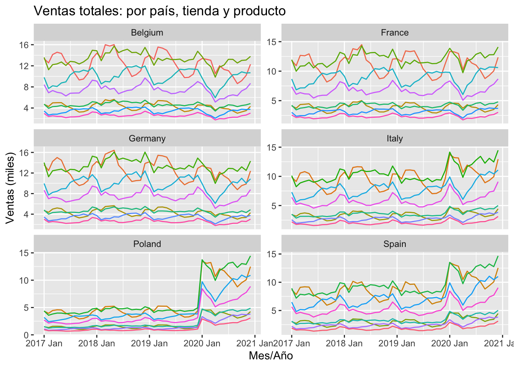
sales_m |>
aggregate_key( country*store*product, num_sold = sum(num_sold,na.rm=TRUE)/1000) |>
filter(!is_aggregated(country), !is_aggregated(store), !is_aggregated(product)) |>
mutate(store = as.character(store),product = as.character(product)) |>
ggplot(aes(x = date, y = num_sold, group = store, colour = store)) +
stat_summary(fun = sum, geom = "line") +
labs(x = "Mes/Año" , y = "Ventas (miles)",title = "Ventas totales: por país, tienda y producto") +
facet_wrap(~as.character(country), scales = "free_y", ncol = 2) +
theme(axis.text.x = element_text(angle = 90, hjust = 1))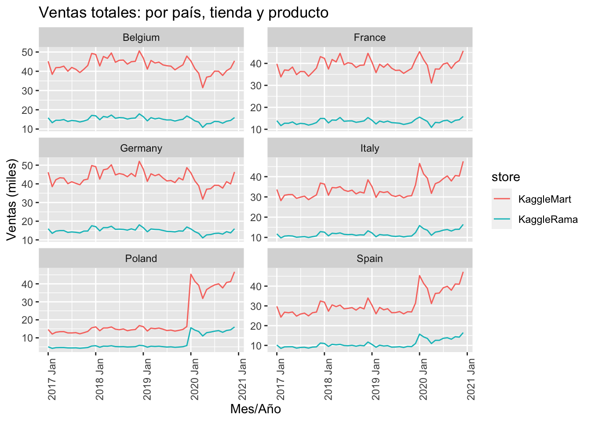
sales_m |>
aggregate_key( country*store*product, num_sold = sum(num_sold,na.rm=TRUE)/1000) |>
filter(!is_aggregated(country), !is_aggregated(store), !is_aggregated(product)) |>
mutate(store = as.character(store),product = as.character(product)) |>
ggplot(aes(x = date, y = num_sold, group = product, colour = product)) +
stat_summary(fun = sum, geom = "line") +
labs(x = "Mes/Año" , y = "Ventas (miles)",title = "Ventas totales: por país, tienda y producto") +
facet_wrap(~as.character(country), scales = "free_y", ncol = 2) +
theme(axis.text.x = element_text(angle = 90, hjust = 1))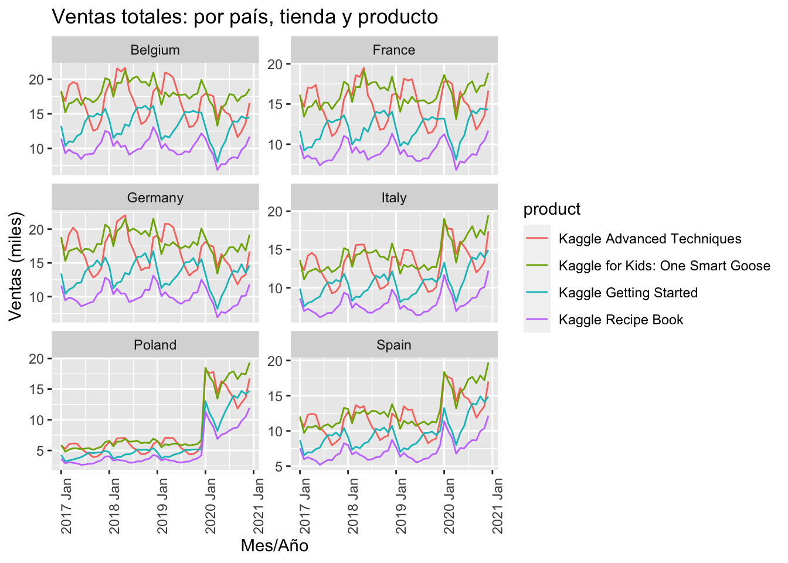
2.3 Estructura Mixta Jerárquica y Agrupada
Ahora bien, es posible que en algunos casos los factores de desagregación estén tanto anidados como cruzados (intersectados) al mismo tiempo, por lo que nuestra estructura es mixta, jerárquica y agrupada al mismo tiempo.
Continuemos con nuestro caso de estudio de los datos de Ventas de productos en países europeos (Kaggle), los datos pueden desagregarse en los 4 productos sin necesidad de anidarse en cualquiera de las otras variables, país o tienda, esto es, podemos analizar nuestros datos o hacer predicciones por producto para toda la región europea con presencia comercial, pero también es posible realizar esto por cada país y por cada tienda. Se define esta estructura como anidación de geografía jerárquica cruzada o “intersectada” con el producto.
Continuando con el uso del paquete de los autores fpp3, lo anterior se implementa combinando factores utilizando la función aggregate_key().
sales_m |>
aggregate_key((country / store) * product, num_sold = sum(num_sold,na.rm=TRUE)/1000) |>
filter(is_aggregated(country), is_aggregated(store), !is_aggregated(product)) |>
autoplot(num_sold) +
labs(x = "Mes/Año" , y = "Ventas (miles)",title = "Ventas totales por producto") +
facet_wrap(vars(product), scales = "free_y", ncol = 2) +
theme(legend.position = "none")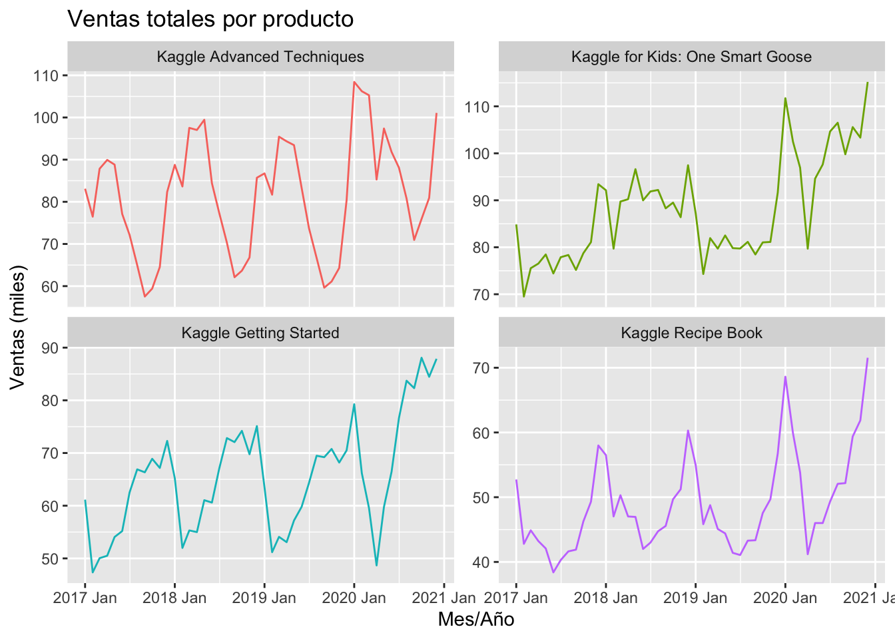
sales_m |>
aggregate_key((country/store)*product, num_sold = sum(num_sold,na.rm=TRUE)/1000) |>
filter(!is_aggregated(country), !is_aggregated(store), !is_aggregated(product)) |>
mutate(store = as.character(store),product = as.character(product)) |>
ggplot(aes(x = date, y = num_sold, group = product, colour = product)) +
stat_summary(fun = sum, geom = "line") +
labs(x = "Mes/Año" , y = "Ventas (miles)",title = "Ventas totales: por país y producto") +
facet_wrap(~as.character(country), scales = "free_y", ncol = 2) +
theme(axis.text.x = element_text(angle = 90, hjust = 1))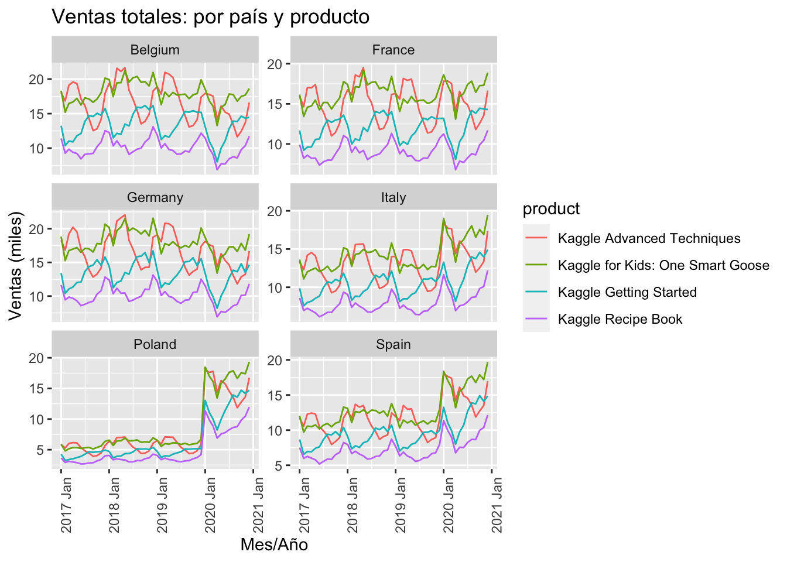